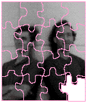

See if you can solve this programming puzzle, presented in the form of a dialog
between Konstantin Othmer (KON) and Bruce Leak (BAL). The dialog gives clues to
help you. Keep guessing until you're done; your score is the number to the left of the
clue that gave you the correct answer. Even if you never run into the particular
problems being solved here, you'll learn some valuable debugging techniques that will
help you solve your own programming conundrums. And you'll also learn interesting
Macintosh trivia.
KON With all the talk of PowerPC, I should give you one of the really nasty PowerPC
bugs I've been working on. But to be fair to those who aren't up to speed yet, namely
one BAL, I'll give you a bug that's right up your alley.
BAL You're a saint.
KON Have you heard of the Display Enabler software that went out with the new
17-inch Multiple Scan display and is part of System 7.5? It lets you dynamically
change your monitor configurations, such as your menu bar screen and resolution on
Multiple Scan displays.
BAL You mean I can Option-drag the menu bar across screens in the Monitors control
panel and it changes dynamically? Totally cool! I hate that "takes effect on restart"
stuff. This means that I can help out all those multimedia applications that don't
understand my second monitor is color.
KON And if you get one of the Multiple Scan displays, you can double-click on a screen
in Monitors and change its resolution on the fly. Last time I saw someone try that on a
Windows machine, it crashed!
BAL Give 'em ten more years, I'm sure they'll get it right.
KON With Display Enabler, the system automatically keeps windows on the screen
when you move the menu bar. It even moves your icons to reasonable positions. If
you're using the new scriptable Finder, the icon relocation is awesome. Sometimes I
get the feeling it can read my mind.
BAL Wait. Are you running a Macintosh or a Newton?
KON Ha ha.
BAL OK, back to the puzzle. What's the bug? Was there trouble with applications that
hide windows by moving them off the screen? Those windows wouldn't be able to be
locat - ed after being moved along with the menu bar.
KON We handle that case for the most part, although that's a pretty cheesy way of
hiding windows. Apparently some developers have trouble figuring out what ShowHide
does. The bug I have for you is way better than that.
BAL Yeah, sure. It probably only happens on a particular machine, in one magic case
that's really hard to reproduce, and only when MacsBug isn't loaded.
KON No fair. You've played this game before. Actually, someone reported that when you
change the resolution of a monitor and then try to restart, the machine hangs on boot.
BAL Well, it's a good thing monitor reconfigurations take effect without restarting,
since restarting doesn't work anymore! Does it happen if I don't have Display Enabler
installed?
KON Without Display Enabler, you can't change the resolution of the monitor. Solve the
problem.
BAL Only under protest. How far does he get when he tries to reboot?
KON Smiley Mac and that's it. It dies right about where you would expect the death
chimes.
BAL And it only happens on this one machine?
KON When we tried to reproduce it on an identical configuration we couldn't.
BAL What's his configuration?
KON Macintosh Quadra 900, on-board video connected to a 17-inch Multiple Scan
display, two hard drives, and System 7.1 with Display Enabler.
BAL How does he regain access to his machine?
KON He resets parameter RAM (PRAM) by holding down Command-Option-P-R until
the machine chimes the second time. Then everything boots fine.
BAL But it boots into the default video mode, not the one he specified in Monitors.
100 KON Of course. Because the original Macintosh was floppy-based, PRAM was
added to hold a lot of system configuration information, such as mouse speed,
double-click time, and sound volume for each monitor. That way you could boot off of
different floppies and still maintain all your system preferences.
BAL The Macintosh II extended the use of PRAM to add support for multiple video cards
and slot devices. Since PRAM is in such short supply, there's also a 'scrn' resource
that's maintained by Monitors that contains the relative locations of the different mon
- itors, as well as each monitor's mode. The problem is that the 'scrn' resource and
your PRAM are out of sync, so the system gets confused and hangs. Go fix your bug.
Over.
90 KON Nice theory, but wrong. First of all, we restart right after closing Monitors.
The last thing Monitors does is update the 'scrn' resource and tell the driver to update
its PRAM settings. So there's not much chance for them to get out of sync. Second, the
'scrn' resource is read and acted upon at extension loading time, and we're hanging way
before that.
BAL So something that's getting written to PRAM must be causing all the fuss. On his
machine, use the DPRAM dcmd to check the PRAM locations related to video before and
after changing the mode. To factor Monitors out of the equation, boot and set the PRAM
locations by hand and see if that's the only dependency.
KON Slick sleuthing, BAL! It turns out that PRAM location that holds the new mode for
the on-board video (in your case, $49) gets changed. If you change it using the SPRAM
dcmd rather than Monitors, the problem still occurs.
BAL Drat. I was hoping that Monitors was somehow trashing the startup drive PRAM
loca - tion. I've always been looking for a good excuse to rewrite Monitors out of that
Pascal morass. This certainly narrows it down.
KON If you say so. But you can only get it to happen on this one machine, and how could
video PRAM be related to booting, anyway?
BAL It's going to be hard to get MacsBug involved since we're too early in the boot pro
- cess.
KON You could get MacsBug-like capabilities at boot time using BootBug, but there's no
card around.
BAL So what's special about this configuration? Is it a prototype 17-inch Multiple
Scan dis - play?
KON Nope. He claims to be using a production unit.
BAL What if you remove the extra hard drive?
85 KON It boots fine. No problem.
BAL You mean if I just turn off the external drive, the machine boots fine?
KON Yep.
BAL What if I set the system to boot off of the external drive?
KON There's no system on the external drive. But you can tell the system to set the
startup disk there. It's not as if it checks for a valid boot volume or anything. I've
heard you can even set it to boot off of a Sega CD.
BAL So I put a system on there and set it as the boot drive. What happens?
80 KON It boots fine.
BAL But if I set the boot drive back to the internal drive, I crash?
KON Nope. That seems to be working fine now too.
BAL Aha! I'll remove the system from the external drive and try to reboot. Now I
crash, right?
75 KON Nope. The system seems to be booting fine now. Nice going, BAL! You fixed the
only reproducible case! Could you recap the symptom and the fix so that I can just add
them to the Read Me file and be done with it?
BAL Yeah, yeah. Somehow something must have changed on that external disk. Maybe
the Finder wrote out some new boot blocks or removed some stale boot blocks when I
trashed the System file. Can we put the disk back to its original state?
70 KON We'll break into our hermetically sealed digital fiberoptic wireless remote
personal information highway archive server and restore your disk image. The
machine still boots fine.
BAL If it's not the disk, I must have changed something in PRAM. What's the startup
drive set to now and what was it when I dumped PRAM earlier?
65 KON The long word that holds the boot drive (PRAM location $78-$7B) used to
hold $0 and now it holds $FFFFFFDF (a driver refNum), which indicates that you're
booting off the internal drive.
BAL What does $0 specify?
KON That's what PRAM gets set to when you don't select a boot drive in the Startup Disk
control panel. It tells the system to go look for a valid boot drive and boot off of the
first one it finds.
BAL When I set the boot drive to the internal drive using Startup Disk, the PRAM
location was set. What happens if I set it back to $0?
60 KON You hang on boot, same as before.
BAL What if you put a System Folder on the external drive but leave the PRAM boot
drive set to $0?
55 KON You don't hang anymore, and the system boots off of the external drive.
BAL And if I drag that System Folder to the trash?
50 KON The system hangs on boot.
BAL What if I use a newly initialized external drive with the same SCSI ID?
45 KON It boots fine.
BAL Let's recap for those just joining us. The machine hangs on boot on a two-drive
system under these circumstances: the System Folder on the external drive has been
deleted; there's no default boot drive selected; and the video mode of the on-board
driver is set to something other than the default. Did I forget anything?
KON The solution.
BAL So how does the system go searching for boot drives?
40 KON If the device specified in PRAM doesn't exist or isn't bootable, the boot code
starts with the device with the highest SCSI ID and looks for boot blocks. If they exist,
it tries to boot off of that drive. If it works, great. If there's no System Folder or
Finder, it will start over with the next highest SCSI ID.
BAL I bet if I put the same SCSI driver on both disks using Apple HD SC Setup, the
problem goes away.
KON You got a theory here, or what?
BAL Early in the boot process, the system heap is really small. When you put the video
driver into one of the new modes tickled by Display Enabler, it loads patches out of
ROM into the system heap. These patches fight with the SCSI driver for the limited
system heap RAM. When no boot drive is selected, the boot code trolls the SCSI bus
looking for a valid boot device. It loads the SCSI driver off the first candidate, starts
booting, and finds there's no valid System Folder present. So it goes to the next drive,
sees that there's a different SCSI driver version on it, and tries to load that version.
Because the video driver loaded its extended tables and forgot to grow the system heap,
the load fails and the system hangs without a clue as to how to proceed.
35 KON Wow! Fabulous theory, but wrong. If you get BootBug -- a wonderful product
for anyone wanting to debug system startup, by the way -- and watch the SCSI
Manager allocate space for the driver, it succeeds. Furthermore, when the system fails
to boot from the first drive it finds, it throws everything away by calling InitZone on
the system heap zone and starts over with the next drive. Your story about the video
driver patches is accurate, but there's still enough room in the system heap after they
load. Your move.
BAL OK, I need some tools. What have you got? Do you expect me to debug this with my
bare hands?
KON Well, we don't have an emulator handy, but we could probably call in a few favors
and get a BootBug NuBus card.
BAL Now this should be easy! Where do I crash?
30 KON You crash in code that's monkeying around with the low-memory glo
BALat $DD8, UniversalInfoPtr. It's the table that tells you everything you ever wanted
to know about this machine's configuration: the clock speed, all kinds of I/O stuff, the
kind of sound hardware, SCSI hardware, on-board video, and memory controller, the
number of NuBus slots . . .
BAL OK, OK. What's the problem?
KON Well, it dereferences $DD8, makes some calculations with the offsets, and ends up
with a bogus address and a bus error.
BALWhere does $DD8 point?
25 KON Into RAM.
BAL That's strange. All that configuration information should be in ROM. I'll stop
BootBug immediately and step spy on $DD8 to see who changes it.
20 KON By the time BootBug comes in, the location is already changed.
BAL Wait, BootBug loads first. It should come in before any other slots get called.
15 KON It works that way on the Macintosh Quadra 610, 650, and 800 models and
later (including the AV models). But you're on a Quadra 900, and on-board video
occupies the first NuBus slot. The video is already gray, so the primary INIT of the
on-board video has already been called.
BAL If I don't set the new video mode, so that I boot successfully, where does $DD8
point?
KON Into ROM.
BAL Aha! The video driver is doing something different because it sees it needs one of
the extended modes. It must patch $DD8 to change the configuration information for the
video display.
10 KON So? What's wrong with patching? Why does it work when only one drive is
involved?
BAL I got it! The video driver patches out $DD8 to replace the tables for the extended
video modes. Then the boot code starts looking for a valid boot drive. It finds the
external drive, which has valid boot blocks since it once had a system on it, and tries
to boot off of that. When it realizes there's no valid System Folder on the disk, the
machine performs a warm restart and tries the next drive.
5 KON Nothing new here yet.
BAL The problem is that when the system restarts, it reinitializes the system heap,
throwing out the video patches, but doesn't reinitialize $DD8 since that's set very
early by the boot code to describe the type of machine that was detected. Now $DD8
points to garbage. As soon as someone tries to reference $DD8 they get garbage,
resulting in a bus error. The machine doesn't know what to do and locks up.
KON Why don't you get a system error or at least the death chimes?
BAL Since there's no way to draw to the screen until a video driver is successfully
found and opened, the death chimes were designed to audibly indicate where in the boot
process failure occurred. Once the video driver is successfully opened, the death
chimes error handler is replaced with the standard system error handler. But when
the external drive failed to boot, the video driver was thrown out and the error
occurred before it was reopened, so no error message could be displayed.
KON Precisely. Since all the problems happen in ROM long before we can get control,
unless we want to do one of those nasty Darin-changed-the-boot-blocks patches, we
can't write those extended modes to PRAM. So we wait until the Display Enabler INIT
loads to synchronize the display with the 'scrn' resource. Trying to debug things at
boot time is hard enough, especially when they happen before BootBug loads.
BAL Nasty.
KON Yeah.
KONSTANTIN OTHMER AND BRUCE LEAK absconded to the ski slopes immediately
after writing this Puzzle Page, leaving develop without a bio. Fortunately, they had
AppleLink hooked up to their cellular phone-based Newtons, so they could pen their
bio remotely. Although develop 's editors repeatedly sent them mail requesting a bio,
all they ever got back was a cryptic message about Crinoline Gopher and Brunch Creek.
Go figure.*
SCORING
Thanks to Ian Hendry, Carl Hewitt, and Mike Puckett for reviewing this column. *